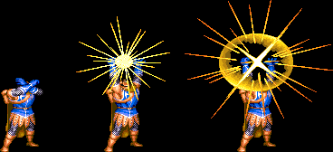
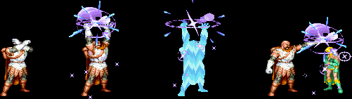
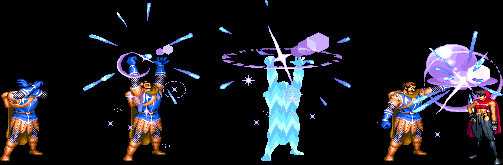
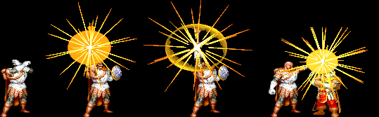
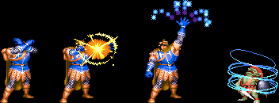
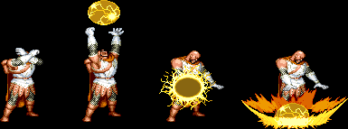
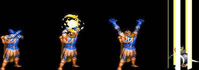
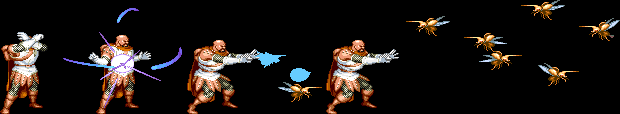
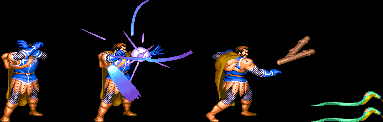
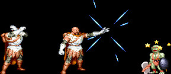

CLERIC |
 |
| |
|
|
| |
※ 데미지는 1인용을 기준으로 합니다.
Bless (B) - 2레벨 주문
파티원들의 사기를 올려주는 주문으로 게임상에선 착용 무기의 데미지를 25%정도 상승 시킵니다.
위치에 상관없이 시전했을 경우 자신과 모든 파티원에게 적용 되며 영향을 받은 대상은 주황색으로 깜빡입니다.
헤이스트 및 인비지빌리티와 중첩되지 않으며 먼저 시전받았던 주문이 무효화 됩니다.
주문이 걸린상태에서 공격이 성공되면, 성공된만큼 주문지속시간이 감안되어 더 오래 가게 됩니다.
(예 : 블레스가 걸린상태에서 헤이스트가 적용되면 블레스의 효과는 사라집니다.)
효과 지속 시간(단위:레벨/초) 12~13/12 14~19/14 20~22/16
|
|
|  |
| |
Cure Serious Wounds (CSW) - 4레벨 주문
피해 입은 HP를 일정량 회복시켜 주는 치료 주문으로 파티원에게도 시전이 가능합니다.
시전자의 레벨이 오를 수록 치료 가능한 HP가 늘어납니다.
파티원과 호흡이 안맞아서 파티원에게 걸어주지 못하고 자신에게 써버리는 경우가 가끔 있기도 합니다.
(참고로 치료를 받을 때 엘프만 혼자 특별한 포즈를 취합니다. 뭣땀시...?)
치료량(단위:레벨/픽셀) 12/24 13/26 14/28 15/30 16/32 17/34 18/36 19/38 20/40 21/42 22/44
※ 다른 파티원이 저주의 검을 휘둘러서 데미지를 입기 직전에 걸어주면 모션을 캔슬시켜 데미지를 무효화 할 수 있으며
또한 넘어지는 아군이 땅에 한번 튕길 시점에 걸어주면 넘어지는 모션도 캔슬시킬수 있습니다.
|
|
|  |
| |
Cure Critical Wounds (CCW) - 5레벨 주문
17레벨이 되면 사용가능 합니다(D.비스트 클리어 후).
마찬가지로 피해받은 HP를 일정량 회복시켜 주며 시전자의 레벨이 오를 수록 치료 가능한 HP가 늘어납니다.
원래는 CSW보다 치료되는 양이 많아야 되나 이 게임에선 어찌된 일인지 치료량이 같습니다.
참고로 D&D룰에선 Cure Serious Wounds는 3d8+시전자의 레벨당1(최대 15) → 최소4에서 최대 39를 회복시키고,
Cure Critical Wounds는 4d8+시전자의 레벨당1(최대 20) → 최소5에서 최대 52를 회복 시킵니다.
치료량(단위:레벨/픽셀) 17/34 18/36 19/38 20/40 21/42 22/44
※ 다른 파티원이 저주의 검을 휘둘러서 데미지를 입기 직전에 걸어주면 모션을 캔슬시켜 데미지를 무효화 할 수 있으며
또한 넘어지는 아군이 땅에 한번 튕길 시점에 걸어주면 넘어지는 모션도 캔슬시킬수 있습니다.
|
|
|  |
| |
Striking (S) - 3레벨 주문
착용 무기의 데미지를 대략 50%가량 상승시켜 줍니다.
자신 또는 파티원에게 시전 할 수 있으며 Bless와 같이 사용하면 특히 초반에 상당히 강력한 파괴력을 보여 줍니다.
스트라이킹이 걸린 무기는 주황색으로 깜빡이며 도중에 무기를 교체 하더라도 효과는 지속됩니다.
주문이 걸린상태에서 공격이 성공되면, 성공된만큼 주문지속시간이 감안되어 더 오래 가게 됩니다.
지속 시간(단위:레벨/초) 12~13/12 14~19/14 20~22/16
※ 다른 파티원이 저주의 검을 휘둘러서 데미지를 입기 직전에 걸어주면 모션을 캔슬시켜 데미지를 무효화 할 수 있으며
또한 넘어지는 아군이 땅에 한번 튕길 시점에 걸어주면 넘어지는 모션도 캔슬시킬수 있습니다.
|
|
|  |
| |
Hold Person (HP) - 2레벨 주문
인간형의 목표물을 19레벨 이전까진 최대 3명까지 포박하며 20레벨 이후로는 최대 4명까지 포박하는 주문입니다.
목표물이 4 이상이라면 무작위로 적용되며 인간형이라 하더라도 언데드와 다크 워리어, 나그파에게는 통하지 않습니다.
쓰러져있는 적을 강제적으로 일으키기 때문에 텔아린과 오우거와 대전시 유용하게 쓰입니다.
이 주문이 적용되면 누적되었던 콤보수치가 초기화 됩니다.
지속 시간 4초
|
|
|  |
| |
Earth Quake (EQ) - 7레벨 주문 (2p 클레릭 전용)
17레벨이 되면 사용가능 하며 지진을 일으킵니다.
지면에 붙어 있는 적에게만 통하며 공중에 떠있는 적은 전혀 데미지를 입지 않습니다.
20레벨을 기준으로 데미지가 커지며 이어링(earring)의 영향을 받습니다. 가고일을 잡을 때 쓸만 합니다.
주문에 맞은 적들은 완전한 다운 상태가 되지 않는 경우가 많으므로 추가타를 넣어 줄 수 있습니다.
데미지(단위:픽셀)
| 레벨 |
16~19 |
20~22 |
| 일반 몬스터 |
45 |
50 |
| 보스 |
38 |
44 |
|
|
|  |
| |
Holy Word (HW) - 7레벨 주문 (1p 클레릭 전용)
17레벨이 되면 사용가능 합니다. 원래 선한 가치관을 가지지 않은 다른 상대에게 각종 피해를 입히지만
(장님을 만든다거나 귀머거리를 만든다거나...) 여기선 적에게 일정한 데미지를 줍니다.
19레벨 이전엔 최대 3명에게 데미지를 입히며 20레벨 이후로는 최대 4명에게 데미지를 입힙니다.
드래곤과 리치, 키메라, 샐러맨더(둘다), 다크 워리어, 에저홀덴에게는 통하지 않으며 연속공격이 되지 않습니다.
(바로 쓰지말고 약간의 시간차를 두고 써야합니다.)
20레벨을 기준으로 데미지가 커지며 이어링(earring)의 영향을 받습니다. 역시 가고일을 잡을 때 쓸만 합니다.
주문에 맞은 적들은 완전한 다운 상태가 되지 않는 경우가 많으므로 추가타를 넣어 줄 수 있습니다.
데미지(단위:픽셀)
| 레벨 |
16~19 |
20~21 |
| 일반 몬스터 |
38 |
48 |
| 보스 |
32 |
40 |
※ 이 주문과 다른 공격 주문의 조합으로 강력한 크리티컬 데미지를 뽑을 수 있습니다.
자세한 사항은 '고급 조작'을 참조.
|
|
|  |
| |
 Insect Plague (IP) - 5레벨 주문 (2p 클레릭 전용) Insect Plague (IP) - 5레벨 주문 (2p 클레릭 전용)
한 무리의 곤충떼를 소환해서 적에게 데미지를 줍니다.
소환된 곤충은 화면 끝까지 날아가서 유턴을 하며 반대편으로 날아갑니다.
19레벨까지는 6마리를 소환하고 20레벨부터는 7마리를 소환합니다.
다단 히트가 되는데 히트 수는 소환한 마릿수 이상이 될 수도 있으며 누워있는 적에게는 대부분 맞지 않습니다.
5레벨 주문의 횟수가 적다는게 흠이지만, 데미지도 꽤 강력하고 다수의 적을 상대하기에도 좋습니다.
특히 다단 히트가 되는 특성상 몸길이가 길면서 많은 콤보를 넣을 수 있는 헬하운드와 D.비스트, 덩치가 큰
다크워리어2와 보스이면서도 일반 몬스터에 필적하는 콤보를 넣을 수 있는 나그파에게 상당히 효과적입니다.
데미지(단위:픽셀) - 1히트당
| 레벨 |
16~19 |
20~21 |
| 일반 몬스터 |
16 |
18 |
| 보스 |
12 |
14 |
※ 이 주문의 데미지 만큼은 "http://www.geocities.jp/kai_rainsphere_elf/DandD2.htm"을 참고하였습니다. 뷁.
|
|
|  |
| |
Stick to Snake (SS)- 4레벨 주문 (1p 클레릭 전용)
나뭇가지를 뱀으로 변환시킵니다. 변환된 뱀은 바닥을 기어다니다가 적을 물고 늘어지며 데미지를 줍니다.
14레벨 이전까지는 2마리를 변환시키고 15레벨 부터는 3마리를 변환시킵니다.
일정한 데미지를 주거나 시간이 지나면 다시 나뭇가지로 돌아갑니다.
보스와 싸우기 전에 미리 몇마리 변환시켜두면 꽤 좋은 효과를 볼 수 있습니다.
참고로 가고일은 아예 물지를 못합니다.
데미지(단위:픽셀) - 소환한 뱀이 전부 물었을 경우
| 일반 몬스터 |
평균48 |
16레벨부터 헬하운드/아울베어를 제외한 일반 몹은 한방에 즉사 |
|
|
|  |
| |
Continual Light (CL) - 3레벨 주문
강렬한 빛을 내뿜어 적의 눈을 멀게 합니다(원작에서는 안구에 직접 넣어 눈을 실명시킴).
적의 숫자에 상관없이 시전자의 시야에 있는 거의 모든 적의 눈을 멀게 만들지만 목표물과의 거리가 너무 멀 경우
효과를 볼 수 없고 언데드와 몇몇 보스는 통하지 않습니다.
혼자 플레이 할 경우에는 스트라이킹의 효과가 더 좋기 때문에 그렇게 많이 쓰이진 않지만,
2인 이상 멀티 플레이를 할 경우에는 보조 마법으로 자주 활용됩니다.
또한 소형유닛이면서 홀드퍼슨이 걸리지 않는 나그파와의 전투에서 상당히 유용하게 사용됩니다.
그리고 리치의 애니메이트 데드와 메테오 스웜 시전을 무효화 시킬 수도 있습니다.
목표물이 서있는 상태에서 이 주문이 적용되면 누적되었던 콤보수치가 초기화 됩니다.
단, 스턴 상태에서는 한대만 맞고도 넘어져 버리니 상황에 알맞은 콤보를 쓰는것이 좋습니다.
효과 지속 시간(단위:레벨/초) 12~13/2 14~19/3 20~22/4
|
|
|  |
| |
※ Continual Light에 대한 추가 정보
보스를 상대로는 방향에 따라 통하지 않을 수도 있으니 주의 할 필요가 있습니다.
A. 다크 워리어1, 오거, 그린 드래곤, 키메라
- 어느 방향 에서든지 효과를 줄 수 있습니다.
B. 맨 스콜피온, 하피, 텔`아린, 비홀더, 만티코어, 리치, D.비스트, 블랙 드래곤, 샐러맨더, 에저홀덴, 나그파
- 보스가 스테이지 좌측 구석 부근에 위치하고 있을 경우 효과가 먹히지 않습니다.
이 경우는 플레이어도 좌측 구석을 등진 채로 우측을 바라보며 시전해야 합니다.
C. 워 머신, 레드 드래곤, 다크 워리어2, synn
- 전혀 효과가 먹히지 않습니다. 다만, 레드 드래곤과 synn의 경우 3연속으로 쓰면 동작을 캔슬 시킬 수 있습니다.
(물론 '3타+라크리'의 용도로도 사용가능) |
|
| |
| go to Top |
| 2007 Crassus & legon. All rights reserved. |